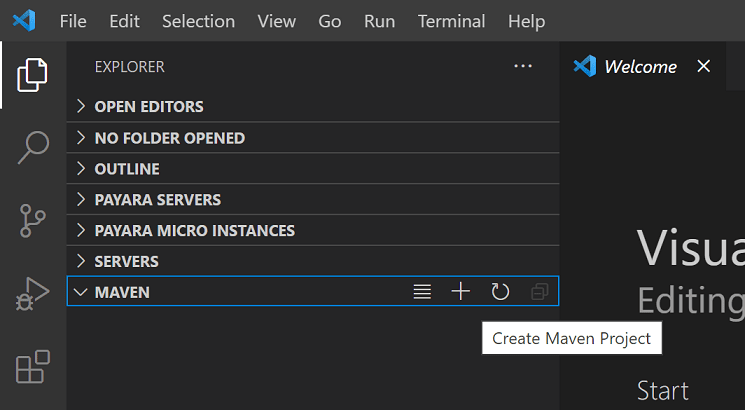

Java build tools in VS Code
This document is an overview of how to work with your Java build tools in Visual Studio Code. It covers the Maven for Java and Gradle for Java extensions as well as other tools.
If you run into any issues when using the features below, you can contact us by entering an issue.
Maven
Maven is a software tool that helps you manage Java projects and automate application builds. The Maven for Java extension for Visual Studio Code provides fully integrated Maven support, allowing you to explore Maven projects, execute Maven commands, and perform the goals of build lifecycle and plugins. We recommend installing the Extension Pack for Java, which includes Maven support and other important Java development features.
Install the Extension Pack for Java
Exploring Maven project
Once a Maven project is loaded, the extension will be activated and it will automatically scan for pom.xml files in your workspace and displays all Maven projects and their modules in the side bar.

Resolve unknown type
The Maven extension also supports searching Maven Central to resolve unknown types in your source code. You can do this by selecting the Resolve unknown type link shown on hover.
Working with POM.xml
The extension provides code snippets and auto completion for adding Maven dependencies based on local Maven repositories. See how easy it is to add a new dependency to your pom.xml with those convenient features.
The extension also enables you to generate effective POM.
You can also use the command Maven: Add a Dependency (or maven.project.addDependency) to help add a new dependency to pom.xml. The process is interactive.
You can also add dependencies through the project view, which calls the same Maven command.
Furthermore, VS Code also supports showing dependencies in a tree view, which allows you to inspect all dependencies in your project at a single place and check for potential issues.
Execute Maven commands and goals
By right-clicking each Maven project in the Explorer, you can conveniently run Maven goals.
The extension also preserves the history of goals for each project, so you can quickly rerun the previous command, which is useful when you're running a long custom goal.
There are two ways to rerun a goal:
- In the Command Palette, run Maven: History, then select a project and a command from its history.
- Right-click a project and select History. You can then select a previous command from history.
You can also specify your favorite commands in settings for future execution.
For each plug-in you use with your project, the extension also provides you an easy way to access the goals within each plugin.
To debug Maven goals, right-click on a goal and start debugging. The Maven extension will call the Java debugger with the right parameters. This is a handy, time-saving feature.
Generate project from Maven Archetype
Another handy feature provided by this extension is to generate a Maven project from Archetype. The extension loads archetypes listed in local/remote catalogs. After selection, the extension sends mvn archetype:generate -D... to the terminal.
There are several ways to create a Maven project:
-
From the Maven Explorer, select the + Create Maven Project button.

-
Open the Command Palette (P (Windows, Linux Ctrl+Shift+P)), search for Create Java Project command.
-
Right-click on a target folder and select Create Maven Project.
Gradle
VS Code supports Gradle Java project (not including Android) via the Gradle for Java extension. The extension provides a visual interface for your Gradle build, you can use this interface to view Gradle Tasks and Project dependencies, or run Gradle Tasks as VS Code Tasks. The extension also offers a better Gradle build file authoring experience including syntax highlighting, error reporting, and auto-completion.
Working with Gradle tasks
When you open a Gradle project in VSCode, you can find some useful Gradle views by clicking the Gradle Side Bar item. Gradle Projects view lists all the Gradle projects found in the workspace. You can view, run, or debug Gradle tasks here.
When there are many Gradle tasks in the workspace, it might be hard to find a specific task. The extension offers a Pinned Tasks view to help you pin your favorite tasks so that you can easily find them in a separate view. You can also see recently executed tasks in the Recent Tasks view.
Viewing Gradle dependencies
In the Gradle Projects view, you can find a Dependencies item under each Gradle project item. It includes all the dependencies in your specified configuration, you can easily check the dependency status of your project.

Managing Gradle Daemons
The Gradle Daemons view shows the daemon status of the current workspace. It lists all the running Gradle daemons in the same version as the workspace. You can choose to stop a specific one or all the daemons in this view.
Authoring build files
The extension provides some useful authoring features on the Gradle build files.
When opening a Groovy Gradle file, the extension will analyze the Gradle file and provide semantic tokens information, providing more precise highlighting results.
In the Outline view, the extension provides the document symbols of the opened Gradle file, which can help you to navigate to any part of the file easily.
If there is any syntax error (missing characters, type not found, etc.) in the opened Gradle file, you can find them in the Problems view.
The extension supports basic auto completions for a Gradle file, when you're trying to type Gradle closures or properties in a Gradle script, the extension will suggest available closures or properties for you.
When you are trying to declare a new dependency, the extension will provide a dependency candidate list for you.
Additional resources
Visit the GitHub Repo of the Maven extension for additional configurations and a troubleshooting guide.
In addition to Maven, there's also a Bazel extension if you use Bazel to build and test your project.
Next steps
Read on to find out more about:
- Java editing - Explore the editing features for Java in VS Code.
- Java debugging - Find out how to debug your Java project with VS Code.
- Java testing - Use VS Code for your JUnit and TestNG cases.
- Java extensions - Learn about more useful Java extensions for VS Code.